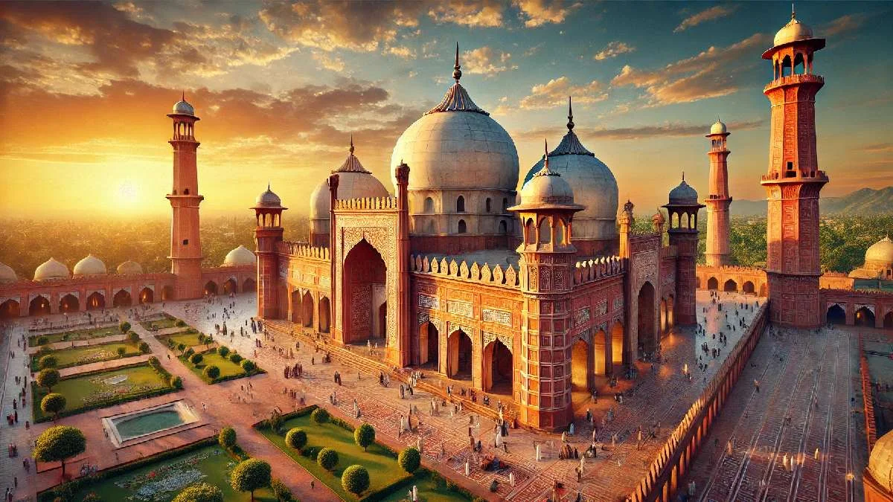

Badshahi Mosque
The Badshahi Mosque is a magnificent Mughal-era structure known for its grandeur and historical significance.
The Badshahi Mosque is a magnificent Mughal-era structure known for its grandeur and historical significance.
Faisal Mosque is an architectural marvel and one of the largest mosques in the world.
The mausoleum is the final resting place of Muhammad Ali Jinnah, symbolizing Pakistan's independence.